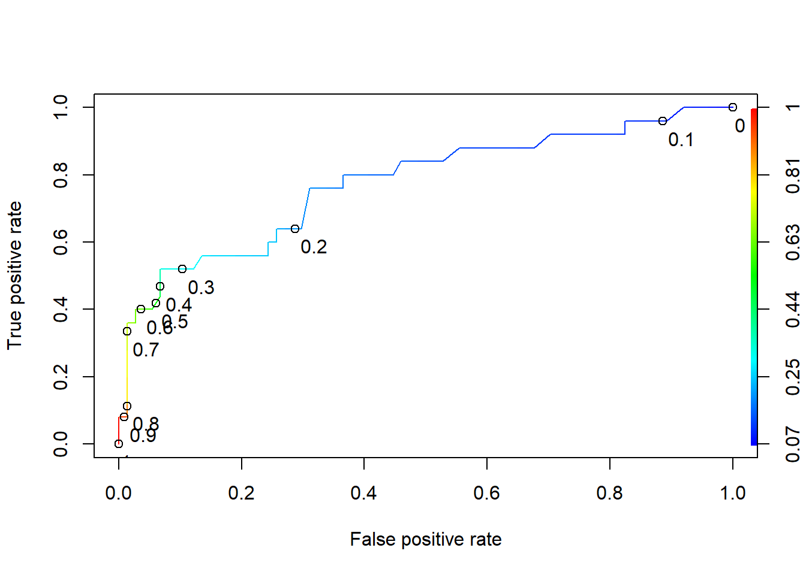

Unit 4 Logistic Regression
4.1 Introduction to Logistic Regression
Logistic Regression is an extension of linear regression for categorical dependent variables.
## 'data.frame': 131 obs. of 14 variables:
## $ MemberID : int 1 2 3 4 5 6 7 8 9 10 ...
## $ InpatientDays : int 0 1 0 0 8 2 16 2 2 4 ...
## $ ERVisits : int 0 1 0 1 2 0 1 0 1 2 ...
## $ OfficeVisits : int 18 6 5 19 19 9 8 8 4 0 ...
## $ Narcotics : int 1 1 3 0 3 2 1 0 3 2 ...
## $ DaysSinceLastERVisit: num 731 411 731 158 449 ...
## $ Pain : int 10 0 10 34 10 6 4 5 5 2 ...
## $ TotalVisits : int 18 8 5 20 29 11 25 10 7 6 ...
## $ ProviderCount : int 21 27 16 14 24 40 19 11 28 21 ...
...##
## 0 1
## 98 33In logistic regression, we’ll use the more common outcome as the baseline prediction, unlke the mean in linear regression models
## [1] 0.7480916#Split data into training set and testing set
library(caTools)
set.seed(88)
split = sample.split(quality$PoorCare, SplitRatio = 0.75) # Split function uniformly splits dats to prevent skewing either dataset
qualityTrain <- subset(quality, split == TRUE)
qualityTest <- subset(quality, split == FALSE)
qualityLog <- glm(PoorCare ~ OfficeVisits + Narcotics, data = qualityTrain, family = binomial)
summary(qualityLog)##
## Call:
## glm(formula = PoorCare ~ OfficeVisits + Narcotics, family = binomial,
## data = qualityTrain)
##
## Deviance Residuals:
## Min 1Q Median 3Q Max
## -2.06303 -0.63155 -0.50503 -0.09689 2.16686
##
## Coefficients:
...4.1.1 Thresholding
AIC can be used to determine quality of model based on specific data, can only be compared to the other models on the same dataset
## Min. 1st Qu. Median Mean 3rd Qu. Max.
## 0.06623 0.11912 0.15967 0.25253 0.26765 0.98456## 0 1
## 0.1894512 0.4392246##
## FALSE TRUE
## 0 70 4
## 1 15 10## [1] 0.4## [1] 0.9459459Increase threshold
##
## FALSE TRUE
## 0 73 1
## 1 17 84.1.2 ROC Curves
Picking a good threshold value using the ROC(Reciever Operator Characteristic) curve
library("ROCR")
ROCRpred <- prediction(predictTrain, qualityTrain$PoorCare)
ROCRperf <- performance(ROCRpred, "tpr","fpr")
plot(ROCRperf, colorize=T, print.cutoffs.at=seq(0,1,0.1), text.adj=c(-0.2,1.7))
4.1.3 Making predictions
## Min. 1st Qu. Median Mean 3rd Qu. Max.
## 0.07631 0.12931 0.19699 0.27549 0.35731 0.95253##
## FALSE TRUE
## 0 19 5
## 1 2 6ROCRpredTest = prediction(predictTest, qualityTest$PoorCare)
auc = as.numeric(performance(ROCRpredTest, "auc")@y.values)
auc## [1] 0.79947924.2 Framingham Heart study
framingham<-read.csv("week3/framingham.csv")
library(caTools)
set.seed(1000)
split <- sample.split(framingham$TenYearCHD, SplitRatio = 0.65)
framinghamTrain <- subset(framingham, split == T)
framinghamTest <- subset(framingham, split == F)
framinghamLog<- glm(TenYearCHD ~ ., data = framinghamTrain, family = binomial)
summary(framinghamLog)##
## Call:
## glm(formula = TenYearCHD ~ ., family = binomial, data = framinghamTrain)
##
## Deviance Residuals:
## Min 1Q Median 3Q Max
## -1.8487 -0.6007 -0.4257 -0.2842 2.8369
##
## Coefficients:
## Estimate Std. Error z value Pr(>|z|)
...predictTest <- predict(framinghamLog, type = "response", newdata = framinghamTest)
table(framinghamTest$TenYearCHD, predictTest >0.5)##
## FALSE TRUE
## 0 1069 6
## 1 187 11## [1] 0.8483896## [1] 0.8444619#ROCR model analysis
library(ROCR)
ROCRpred <- prediction(predictTest, framinghamTest$TenYearCHD)
auc <- as.numeric(performance(ROCRpred, "auc")@y.values)
auc #74.2% accuracy for model## [1] 0.74210954.3 Recitation 3 - Election Forecasting
4.3.0.1 Dealing with missing data
##
## 2004 2008 2012
## 50 50 45## State Year Rasmussen SurveyUSA
## Arizona : 3 Min. :2004 Min. :-41.0000 Min. :-33.0000
## Arkansas : 3 1st Qu.:2004 1st Qu.: -8.0000 1st Qu.:-11.7500
## California : 3 Median :2008 Median : 1.0000 Median : -2.0000
## Colorado : 3 Mean :2008 Mean : 0.0404 Mean : -0.8243
## Connecticut: 3 3rd Qu.:2012 3rd Qu.: 8.5000 3rd Qu.: 8.0000
## Florida : 3 Max. :2012 Max. : 39.0000 Max. : 30.0000
## (Other) :127 NA's :46 NA's :71
## DiffCount PropR Republican
## Min. :-19.000 Min. :0.0000 Min. :0.0000
...## State Year Rasmussen SurveyUSA DiffCount PropR Republican
## 1 Alabama 2004 11 18 5 1 1
## 2 Alabama 2008 21 25 5 1 1
## 3 Alaska 2004 NA NA 1 1 1
## 4 Alaska 2008 16 NA 6 1 1
## 5 Arizona 2004 5 15 8 1 1
## 6 Arizona 2008 5 NA 9 1 1## Rasmussen SurveyUSA PropR DiffCount
## Min. :-41.0000 Min. :-33.0000 Min. :0.0000 Min. :-19.000
## 1st Qu.: -8.0000 1st Qu.:-11.7500 1st Qu.:0.0000 1st Qu.: -6.000
## Median : 1.0000 Median : -2.0000 Median :0.6250 Median : 1.000
## Mean : 0.0404 Mean : -0.8243 Mean :0.5259 Mean : -1.269
## 3rd Qu.: 8.5000 3rd Qu.: 8.0000 3rd Qu.:1.0000 3rd Qu.: 4.000
## Max. : 39.0000 Max. : 30.0000 Max. :1.0000 Max. : 11.000
## NA's :46 NA's :71set.seed(144)
imputed <- complete(mice(simple)) #Differnt from recition, so ill download the file instead##
## iter imp variable
## 1 1 Rasmussen SurveyUSA
## 1 2 Rasmussen SurveyUSA
## 1 3 Rasmussen SurveyUSA
## 1 4 Rasmussen SurveyUSA
## 1 5 Rasmussen SurveyUSA
## 2 1 Rasmussen SurveyUSA
## 2 2 Rasmussen SurveyUSA
## 2 3 Rasmussen SurveyUSA
...## State Year Rasmussen SurveyUSA
## Arizona : 3 Min. :2004 Min. :-41.000 Min. :-33.000
## Arkansas : 3 1st Qu.:2004 1st Qu.:-10.000 1st Qu.:-11.000
## California : 3 Median :2008 Median : 3.000 Median : 1.000
## Colorado : 3 Mean :2008 Mean : 2.048 Mean : 1.359
## Connecticut: 3 3rd Qu.:2012 3rd Qu.: 12.000 3rd Qu.: 16.000
## Florida : 3 Max. :2012 Max. : 39.000 Max. : 30.000
## (Other) :127
## DiffCount PropR Republican
## Min. :-19.000 Min. :0.0000 Min. :0.0000
...4.3.1 A sophisticated baseline model
pollingTrain <- subset(polling, Year == 2004| Year == 2008)
pollingTest <- subset(polling, Year == 2012)
table(pollingTrain$Republican)##
## 0 1
## 47 53##
## -1 0 1
## 60 4 81##
## -1 0 1
## 0 42 1 4
## 1 0 1 52#building the model
#Check collinearity
cor(pollingTrain[c("Rasmussen", "SurveyUSA", "PropR", "DiffCount", "Republican")])## Rasmussen SurveyUSA PropR DiffCount Republican
## Rasmussen 1.0000000 0.9365837 0.8431180 0.5109169 0.7929252
## SurveyUSA 0.9365837 1.0000000 0.8616478 0.5222585 0.8101645
## PropR 0.8431180 0.8616478 1.0000000 0.8273785 0.9484204
## DiffCount 0.5109169 0.5222585 0.8273785 1.0000000 0.8092777
## Republican 0.7929252 0.8101645 0.9484204 0.8092777 1.0000000##
## Call:
## glm(formula = Republican ~ PropR, family = "binomial", data = pollingTrain)
##
## Deviance Residuals:
## Min 1Q Median 3Q Max
## -2.22880 -0.06541 0.10260 0.10260 1.37392
##
## Coefficients:
## Estimate Std. Error z value Pr(>|z|)
...##
## FALSE TRUE
## 0 45 2
## 1 2 51mod2 <- glm(Republican~SurveyUSA + DiffCount, data = pollingTrain, family = "binomial")
pred2 <- predict(mod2, type = "response")
table(pollingTrain$Republican, pred2 > 0.5)##
## FALSE TRUE
## 0 45 2
## 1 1 52##
## -1 0 1
## 0 18 2 4
## 1 0 0 21TestPrediction <- predict(mod2, newdata = pollingTest, type="response")
table(pollingTest$Republican, TestPrediction >= 0.5)##
## FALSE TRUE
## 0 23 1
## 1 0 214.4 Assignment
4.4.1 Part 1 - Popularity of Music Records
1.1 How many observations (songs) are from the year 2010?
## 'data.frame': 7574 obs. of 39 variables:
## $ year : int 2010 2010 2010 2010 2010 2010 2010 2010 2010 2010 ...
## $ songtitle : Factor w/ 7141 levels "'03 Bonnie & Clyde",..: 6204 5522 241 3098 47 607 254 4419 2887 6756 ...
## $ artistname : Factor w/ 1032 levels "50 Cent","98 Degrees",..: 3 3 3 3 3 3 3 3 3 12 ...
## $ songID : Factor w/ 7549 levels "SOAACNI1315CD4AC42",..: 595 5439 5252 1716 3431 1020 1831 3964 6904 2473 ...
## $ artistID : Factor w/ 1047 levels "AR00B1I1187FB433EB",..: 671 671 671 671 671 671 671 671 671 507 ...
## $ timesignature : int 3 4 4 4 4 4 4 4 4 4 ...
## $ timesignature_confidence: num 0.853 1 1 1 0.788 1 0.968 0.861 0.622 0.938 ...
## $ loudness : num -4.26 -4.05 -3.57 -3.81 -4.71 ...
## $ tempo : num 91.5 140 160.5 97.5 140.1 ...
...## year songtitle artistname
## Min. :1990 Intro : 15 Various artists: 162
## 1st Qu.:1997 Forever : 8 Anal Cunt : 49
## Median :2002 Home : 7 Various Artists: 44
## Mean :2001 Goodbye : 6 Tori Amos : 41
## 3rd Qu.:2006 Again : 5 Eels : 37
## Max. :2010 Beautiful: 5 Napalm Death : 37
## (Other) :7528 (Other) :7204
## songID artistID timesignature
## SOALSZJ1370F1A7C75: 2 ARAGWS81187FB3F768: 222 Min. :0.000
...## [1] 7574## year songtitle artistname songID
## 4329 2001 You Rock My World Michael Jackson SOBLCOF13134393021
## 6207 1995 You Are Not Alone Michael Jackson SOJKNNO13737CEB162
## 6210 1995 Black or White Michael Jackson SOBBRFO137756C9CB7
## 6218 1995 Remember the Time Michael Jackson SOIQZMT136C9704DA5
## 6915 1992 In The Closet Michael Jackson SOKIOOC12AF729ED9E
## artistID timesignature timesignature_confidence loudness tempo
## 4329 ARXPPEY1187FB51DF4 4 1.000 -2.768 95.003
## 6207 ARXPPEY1187FB51DF4 4 1.000 -9.408 120.566
## 6210 ARXPPEY1187FB51DF4 4 1.000 -4.017 115.027
...##
## 0 1 3 4 5 7
## 10 143 503 6787 112 19## [1] Wanna Be Startin' Somethin'
## 7141 Levels: '03 Bonnie & Clyde '69 ... ZumbiSongsTrain <- subset(songs, year <= 2009 )
SongsTest <- subset(songs, year == 2010 )
nrow(SongsTrain)## [1] 72012.1 Building the model
nonvars = c("year", "songtitle", "artistname", "songID", "artistID")
SongsTrain = SongsTrain[ , !(names(SongsTrain) %in% nonvars) ]
SongsTest = SongsTest[ , !(names(SongsTest) %in% nonvars) ]
SongsLog1 = glm(Top10 ~ ., data=SongsTrain, family=binomial)
summary(SongsLog1)##
## Call:
## glm(formula = Top10 ~ ., family = binomial, data = SongsTrain)
##
## Deviance Residuals:
## Min 1Q Median 3Q Max
## -1.9220 -0.5399 -0.3459 -0.1845 3.0770
##
## Coefficients:
## Estimate Std. Error z value Pr(>|z|)
...3.2 Beware of Multi-cllinearity. loudness and energy highly correlated. remove loudness
##
## Call:
## glm(formula = Top10 ~ . - loudness, family = binomial, data = SongsTrain)
##
## Deviance Residuals:
## Min 1Q Median 3Q Max
## -2.0983 -0.5607 -0.3602 -0.1902 3.3107
##
## Coefficients:
## Estimate Std. Error z value Pr(>|z|)
...##
## Call:
## glm(formula = Top10 ~ . - energy, family = binomial, data = SongsTrain)
##
## Deviance Residuals:
## Min 1Q Median 3Q Max
## -1.9182 -0.5417 -0.3481 -0.1874 3.4171
##
## Coefficients:
## Estimate Std. Error z value Pr(>|z|)
...TestPrediction <- predict(SongsLog3, newdata = SongsTest, type="response")
table(SongsTest$Top10, TestPrediction >= 0.45)##
## FALSE TRUE
## 0 309 5
## 1 40 19##
## 0 1
## 314 59